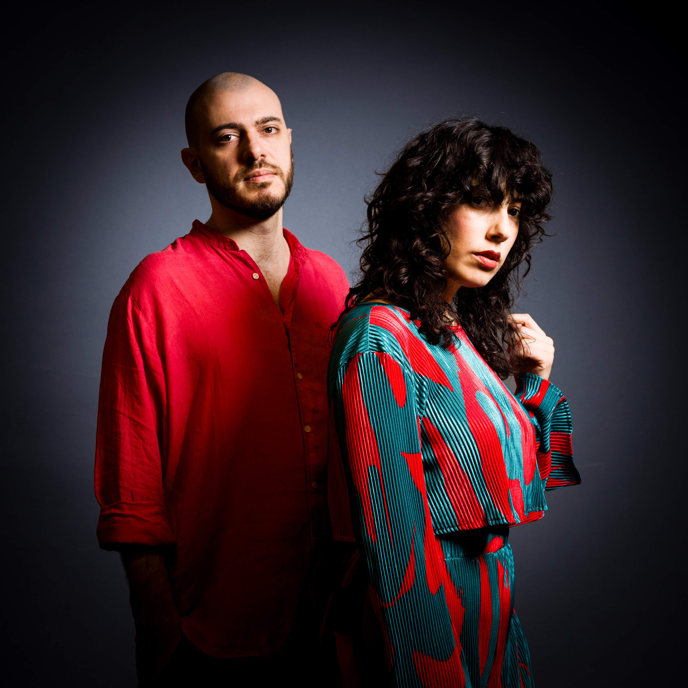

Mergozzo Si Nota · Concerto
Simona Severini
Jacopo Ferrazza
20 febbraio 2026
18.00
Antica Latteria di Mergozzo
Simona Severini — chitarra e voce
Jacopo Ferrazza — contrabbasso
Dream Scenario è il primo album del duo formato dalla cantautrice e chitarrista Simona Severini e dal contrabbassista Jacopo Ferrazza, musicisti diversi ma complementari che insieme danno vita a un equilibrio inedito e a un rinnovato orizzonte creativo.
Il titolo dell’album trae ispirazione dall’omonimo fi lm di Kristo ff er Borgli, storia surreale di un uomo che si ritrova a comparire nei sogni di persone a lui estranee, fi no a essere riconosciuto nella realtà. Dream Scenario parla, infatti, di ciò che accade quando dormiamo: come portiamo nel sogno ciò che viviamo da svegli, così nella veglia riportiamo ciò che il sogno di ha lasciato. Simona e Jacopo evocano una condizione sospesa, un limbo a ff ascinante e perturbante, tradotto in musica attraverso linguaggi di ff erenti, in un continuo alternarsi di tensione e distensione.
L ’ album è composto da undici brani - nove originali con musiche di Ferrazza e testi, in italiano e in inglese, di Severini – accanto alle riletture in chiave minimalista di Black Crow di Joni Mitchell, Prelude to a Kiss e Caravan di Duke Ellington. Le composizioni si muovono tra progressioni armoniche spesso modulanti, sopra le quali la melodia si dispiega limpida e ampia nel suo sviluppo. Dream Scenario è un unico contenitore di ambientazioni e stili diversi, ma anche una ri fl essione sui percorsi immaginari, sui limiti e sulla nostalgia. È uno spazio in cui realtà e possibilità si s fi orano, dove ogni suono sembra nascere da un ricordo e aprirsi verso un'atmosfera strati fi cata, dolce ed inquietante, che esplora il con fi ne tra controllo e abbandono
Ingresso: 15 €
Prenotazione consigliata: mergozzosinota@gmail.com